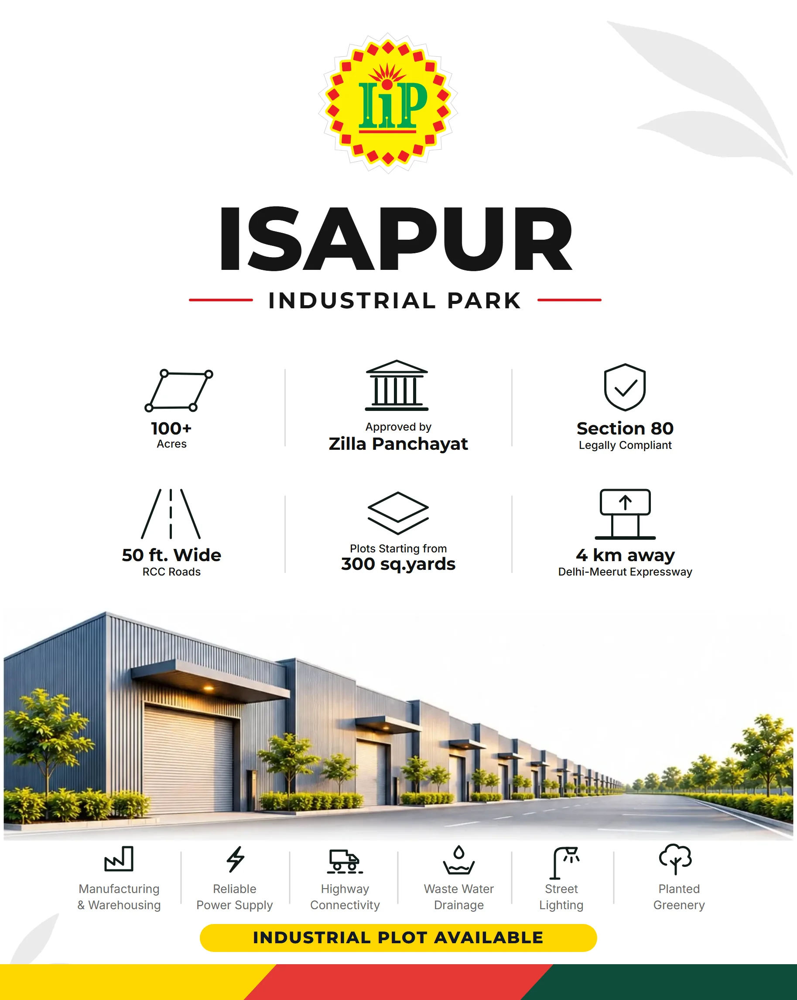

Ready complete Partial needs inputs New added Next phase to be built Parked later
01
Brand story and positioning
Ready
Isapur Industrial Park is a modern industrial address on the Hapur-Modinagar Road for local manufacturers who want a clear, legal, well laid plot without noise.
Name
The name is Isapur Industrial Park, short form IIP. The developer is not named in any public material.
Positioning
For factory owners and small industrial buyers along the Hapur-Modinagar Road, IIP is the industrial park that says less and shows more: wide roads, clean papers, a name you can read from a moving vehicle.
Promise
Plots you can verify. Facilities we can show. One number to call.
Taglines, adaptive
A Modern Industrial Address.
The Groundwork for Growth.
Audience
Primary: local factory owners and small industrial buyers. Secondary candidates: warehouse and logistics operators, investors, brokers.
Personality
Calm, exact, modern, trustworthy. A planner, not a salesman.
What makes us different on this road
Competitor boards use navy, gold or red, dense copy, stamps and rendered townships. IIP uses white space, one logo and one line, so it is read first and remembered.
02
Logo system
Ready
The badge is never changed, recoloured or redrawn. Every lockup uses the same badge and the Montserrat ExtraBold wordmark.
Construction
Brand mark: the rosette badge (sunburst, IiP monogram, circuit dots).
Logotype: the IiP monogram alone.
Wordmark: ISAPUR over INDUSTRIAL PARK.
Accent line: the red rule beside INDUSTRIAL PARK in the vertical lockup.
Source
No vector original exists. The badge is a traced vector of the supplied artwork, good up to hoarding size. Find the designer's original for very large or very close print.
Primary lockup (vertical)Default. Badge over ISAPUR over INDUSTRIAL PARK with the red accent line.
White first, charcoal for text, yellow for highlight, red as a thin accent, deep green as the quiet secondary. The badge keeps its own measured colours (yellow #FEF102, red #EE1D23, green #00A54F) and is never retinted.
Proportion guide: about 70% white, 6% mist, 14% charcoal, 6% yellow, 2% red, 2% green. Red is a line, not a block.
Each swatch shows two chips: the screen colour (left) and its approximate look on press (right), converted through the US Web Coated SWOP profile. CMYK values are a starting point for the printer. Yellow, red and the badge colours print close to screen. Charcoal and deep green print darker and duller, so approve a printer proof and tune from it.
Plain English, short sentences, numbers instead of adjectives. We state what is true and what we can show.
We sound
Clear and direct.
Confident, never loud.
Specific: 50 ft roads, not great roads.
Local and practical, English only.
Words to use
plots, approved, wide roads, power, drainage, street lighting, greenery, expressway, site visit, call.
We avoid
Superlatives we cannot prove: best, world class, premium.
Dream, luxury, lifestyle language.
Hindi mixed into English copy (owner decision).
Claims without a document on file (see Governance).
Random word strings (owner rejected one earlier line).
Taglines: adaptive, not fixed
Two approved lines. Pick the one that fits the creative, never print both together.
Line
Best for
A Modern Industrial Address.
Identity first: boards, gate, hoarding, letterhead, profile covers. Says what and where.
The Groundwork for Growth.
Benefit first: plot offers, infrastructure posts, owner and investor messages, captions. Says why. Works with roads, drainage, lights, greenery.
Neither
Pure fact posts (distance, road width, site visit) can stand with just the logo and phones.
Parked, not in use: Where Industry Moves Forward. Built for Business. Designed for Growth. The Next Address of Industry. Space for What's Next.
Examples
Where
Line
Pole board
The Groundwork for Growth. Call 9837057800 | 9219549800
WhatsApp status
Industrial Plot Available. Visit the site this week.
Social caption
50 ft wide RCC roads, street lighting and planted greenery. IIP, Hapur-Modinagar Road.
Reply to a lead
Thank you for your interest. We will share the layout map and plot list. When can you visit the site?
07
Photography direction and shoot plan
Ready
There is no photography yet. This is the plan for the first shoot: real photos of the real park, in neutral daylight. No warm filters, no glow, no AI softness. Photos can be cropped into the sunburst shape.
Style
Real site photos, neutral hazy daylight, true colours.
Wide roads, gate, drainage, street lights, trees, plots staked.
Clean crops, level horizon, no heavy grade.
People only with consent (workers in safety gear).
Until then
Boards and posts use the logo, sunburst, stripe and type only. No building or warehouse picture is used, because none of it exists yet.
Shot list for the first shoot
Shot
Why
Gate and signage, straight on and from the road
Recognition from a moving vehicle
50 ft road, long lens
Proves the road width
Street lights lit at dusk
Proves street lighting
Tree-lined edge and plantation
Proves planted greenery
Drainage line and the naala outfall
Proves drainage
Plots with boundary pegs, wide
Shows the product
Drone view with the expressway side
Shows location
Pole board and hoarding in place
Proof of presence
08
Iconography
Ready
Line icons on a 48 unit grid: 2.4 stroke, round caps and joins, charcoal on white, at most two detail strokes. One icon per fact. All 24 icons share one drawing style.
The sunburst comes from the badge. It works as an outline, a solid shape, a ring, a pattern and a badge. Yellow, red and green appear together as a stripe. Every element is an independent SVG, and all assets are also in one master file.
One logo, one line, lots of white. Safe margin 6% of the shorter side. Maximum seven words on a board. Diagrams with trim, bleed and safe markings for every format are in the Print guide that follows.
Format
Size
Layout rule
Pole board
20 x 32 in (5:8)
Lockup top, tagline right aligned, phones bottom. Same size as competitor boards.
Hoarding
40 x 20 ft or 40 x 15 ft
Lockup left, one line right, phones big.
Poster
1827 x 2290 px master
3 x 2 facts grid, 6 facility icons in a row.
Social
1:1, 4:5, 9:16
Lockup top, line, phones, stripe at the foot.
Stationery
Card 3.5 x 2 in, A4
Lockup and stripe, generous margins
Poster (print master)

Isapur Industrial Park posterFacts grid and facilities row. Claims shown must match the claims table in Governance.
Read this before sending any file to a printer. It explains bleed and the other terms in plain English, with marked diagrams for every IIP format.
Print is not like a screen. A file that looks perfect on your phone can still print with a white edge, cut-off text or dull colours. This guide teaches the few ideas that prevent this. Read it once, then use the checklist every time.
Truth labels. Numbers marked with a number in brackets come from public printer guides (reported, see Sources). Our default bleed and safe sizes are recommendations. Your printer's numbers always win. Ask for their template before you finish a file.
1. The four words you must know
Bleed, trim, safe zone, crop marksShown on a 3.5 x 2 in business card. The same ideas apply to a 40 ft hoarding, only the sizes change.
Bleed: extra picture or colour past the cut. Without it, a thin white line can show at the edge.
Trim: the final size after cutting. Cards are 3.5 x 2 in after trim.
Safe zone: a border inside the trim. Logos and text stay inside it.
Crop marks: tiny corner lines that mark the cut. Most online printers add them for you, so do not add them unless asked.
6% design margin: our own rule. Keep content at least 6% of the shorter side inside the trim. Use the bigger of the safe zone and the 6% margin.
Bleed amounts vary by printer: 3 mm to 5 mm for paper, 0.125 in is common for US banners, 0.5 in for some hanging banners, and one outdoor banner printer adds 50 mm each side[1][12][13]. Cards: 0.125 in bleed and 0.125 in safe is a common template[6], but 3 mm bleed and 3 to 5 mm safe is also widely quoted[5][6].
2. Our default numbers, format by format
Bleed edge (art must reach it)Trim line (where it is cut)Safe zone (printer's minimum)6% design margin (our rule)Logo zone (top)Grid columns
Format
Trim size
Bleed
Safe zone
6% margin
File size with bleed
Notes
Pole board
20 x 32 in
1 in
1.5 in
1.2 in
22 x 34 in
Competitor size. Confirm hem or frame with the media owner.
Street pole board
24 x 36 in
1 in
1.5 in
1.44 in
26 x 38 in
2:3 shape.
Hoarding
40 x 20 ft
3 in
6 in
14.4 in
40 ft 6 in x 20 ft 6 in
Allow a hem and eyelet strip of about 1 to 1.25 in inside the bleed[13].
Hoarding, wide
40 x 15 ft
3 in
6 in
10.8 in
40 ft 6 in x 15 ft 6 in
Same as above.
Business card
3.5 x 2 in
3 mm
5 mm
3 mm
94.9 x 56.8 mm
Use 5 mm because it is the bigger one.
Letterhead
A4 210 x 297 mm
3 mm
5 mm
12.6 mm
216 x 303 mm
10 mm clear if office printed.
Poster
1827 x 2290 px master
3 mm (18 px at 150 dpi)
10 mm (59 px)
110 px
1863 x 2326 px
Raster size. Larger prints need vector.
Default hoarding numbers are recommendations. The sources we found do not state a 3 in hoarding bleed, so ask the printer. Rigid ACP or board panels may need less bleed than a flex that gets hemmed.
Pole board 20 x 32 inFile size with bleed: 22 x 34 in. Matches competitor boards. 4 column grid.Street pole board 24 x 36 inFile size with bleed: 26 x 38 in. 2:3 shape.Hoarding 40 x 20 ftFile size with bleed: 40 ft 6 in x 20 ft 6 in. Bleed and safe are drawn 9 times bigger so you can see them. Dots show the eyelet and hem strip inside the bleed. 12 column grid.Hoarding 40 x 15 ftFile size with bleed: 40 ft 6 in x 15 ft 6 in. Same enlarged drawing. Wide format, lockup left, one line right.Business card 3.5 x 2 inFile size with bleed: 94.9 x 56.8 mm. Keep text 5 mm inside the trim (bigger than the 6% rule).Letterhead A4File size with bleed: 216 x 303 mm. If printed on an office printer, keep 10 mm clear on all sides.Poster 1827 x 2290 pxMaster is 1827 x 2290 px. At 150 dpi that prints about 12.2 x 15.3 in. For bigger prints use the vector poster file, not this raster size. 3 column grid, as in the facts grid.
The grid columns, logo zone and 6% margin are layout guides for designers. The printer only cares about bleed, trim and safe zone.
3. Colour: screen colour is not print colour
RGB is light (screens). CMYK is ink (cyan, magenta, yellow, black). RGB can show very bright yellows, greens and reds that CMYK cannot. When you convert, bright colours look duller. Convert early and check.
Our colours: Yellow #FFD600, Red #E53935, Deep green #0F4D3A, Charcoal #111827. The CMYK values in this kit are simple conversions. Always get a printed proof.
Deep green and charcoal are dark. On flex they can print muddy or look almost the same. Test them side by side.
Black, rich black
Small black text: use 100% K only (C0 M0 Y0 K100). Layers of ink can misalign and blur small text[7].
Big black areas: printers often use a rich black, black plus other inks. One common mix is C60 M40 Y40 K100[7]. Mixes differ, so ask your printer for theirs.
Spot vs process: process colour builds every colour from the four CMYK inks. A spot colour is one special premixed ink (for example Pantone). It costs more and is for exact brand colours. IIP uses process colour by default.
Overprint: when one ink prints on top of another instead of cutting a hole. It is fine for black text. It is wrong for white objects or coloured logos. Turn on Overprint Preview in your design app and look.
4. Resolution, vector and raster
Vector (SVG, PDF, AI): made of shapes and lines. Prints sharp at any size. Use it for logos, icons, text, patterns.
Raster (photos, WEBP, JPG, PNG): made of pixels. Gets soft or blocky when enlarged.
Keep the logo, icons, text and sunburst as vector in the final file.
How many dots? Sources disagree, so treat these as starting points. Helloprint suggests 200 dpi for banners seen from 3 to 6 ft and 75 dpi for very large outdoor displays[1]. PSPrint asks for 300 dpi at a 1:12 scale for banners of 50 ft or more[2]. Some banner templates ask for about 150 dpi at final size. Printers may give you one number for the hoarding size, so ask.
A photo at 4800 pixels wide stretched to a 40 ft hoarding is only about 10 dpi at full size. That is normal for far viewing, but confirm with the printer. Never enlarge a small web photo for a hoarding.
Images online in this kit are WEBP. For print, supply the original photo (JPG or TIFF at full quality), not a website copy.
5. Fonts and PDF files
Outline the fonts (convert text to shapes) before sending. Then no font can go missing or swap at the printer. The outlined SVG and PDF files in this kit are already outlined.
Keep the live (editable) file for yourself. Send the outlined one.
Embed images or send them with the file.
PDF/X is a strict print PDF. PDF/X-1a is the safe old standard and some printers require it[8]. PDF/X-4 also allows transparency. Use the one your printer asks for. In your PDF settings, tick use document bleed.
Do not send a screenshot, a photo of a screen, or a WhatsApp-compressed image to a printer.
6. Materials: what changes in the file
Material
Used for
What to know
Flex (PVC banner, star flex, backlit flex)
Roadside hoardings, pole boards
Flexible, light, cheap. Printers list standard, star flex and backlit types[4]. Edges are hemmed and get eyelets, so keep content away from them[13][12]. Ask for the hem width.
Vinyl (self-adhesive)
Stuck on ACP, board, glass, wall
Needs a flat surface. Cut and stick tolerance is small, so bleed matters. Ask about lamination and outdoor life.
ACP (aluminium composite panel)
Gate fascia, pole boards that must stay flat
Rigid and flat, cut to exact size, no hem. We found no printer guide for ACP file setup, so confirm the bleed and any mounting holes with your sign shop.
Paper and card
Cards, letterhead, brochures
Use 300 dpi, 3 mm bleed, CMYK, PDF/X. Thick or uncoated paper changes colour, so ask for a paper sample.
7. Viewing distance: how big must letters be?
Letters must grow with distance. Sources give different rules, so here are all three:
1 inch of letter height per 10 ft of distance[9] (the strict, easy-to-read rule).
1 inch per 30 ft[11] (road sign average, the loosest rule).
Letter height
Strict (1 in : 10 ft)
LED rule (1 in : 25 ft)
Loose (1 in : 30 ft)
1.5 in (phone numbers on a small card)
15 ft
37 ft
45 ft
3 in
30 ft
75 ft
90 ft
6 in
60 ft
150 ft
180 ft
12 in (pole board tagline)
120 ft
300 ft
360 ft
24 in (hoarding headline)
240 ft
600 ft
720 ft
Use the strict column for roadside work. Lighting, font and contrast matter, and a driver has only a few seconds[15]. Keep one main message of about six short words[15]. Our rule in this kit is a maximum of 7 words on a board. Test it: print the layout at small size, stick it on a wall and step back, or view the file full size from the real distance.
8. Colour proofing
Ask for a hard copy proof on the real material, or at least a small test piece.
Look at it in daylight, outdoors, at the real distance.
Check the yellow, the deep green and the charcoal. These move the most.
Sign and date the proof. Keep a photo. Bulk print must match it.
Do not approve colour from a phone or a PDF on screen.
Do not approve a proof printed on a different paper or flex.
Do not let the printer change colours without telling you.
9. Preflight checklist (tick every line before sending)
Size is correct at 100%, trim plus bleed.
Bleed is added on all four sides and art reaches the bleed edge.
All text and logos are inside the safe zone and the 6% margin.
Text is converted to outlines (or fonts are embedded).
Colour mode is CMYK. Small black text is 100% K.
Images are placed at a suitable dpi for the viewing distance and are embedded.
Logo is an approved file, never stretched, never recoloured.
Phone numbers are 9837057800 and 9219549800, spelled right.
Every claim on the board has proof on file (see Governance).
No crop marks or colour bars unless the printer asked.
Exported as PDF/X (or the type the printer wants). Checked at 100% zoom.
File named with size and version, for example pole-20x32-v3.pdf.
10. Ask your printer (copy this list)
What is the exact trim size and the exact file size with bleed?
How much bleed do you need on each side? Do you want crop marks?
How wide are the hem, eyelet and pole-pocket areas? Where do eyelets go?
What file type do you want: PDF/X-1a, PDF/X-4, TIFF?
What dpi at full size do you want for photos? What is the largest file you can take?
Which colour profile (ICC) and which black do you use? Do you want spot colours?
Which material and finish (flex type, vinyl, ACP, lamination)? How long does it last outdoors?
Can I see a printed proof or a small test strip? How long does that take?
Who mounts the board? Do you need a frame size or fixing holes from me?
What is the cost, the minimum order, the turnaround and the reprint policy?
All sources are public printer and sign guides read through search results on 2026-11-06 (reported, not fully verified). Indian practice is mostly from vendor listings, which give materials and prices but few file specs, so your local printer's template is the final word. The 3 in hoarding bleed, 1 in pole bleed and the default safe zones are our recommendations.
12
Applications: stationery, ID and workwear
Ready
Every piece is an editable vector file at true size. Business cards come in two wordmark styles: vertical and horizontal.
Boards are sized to match the competitors on the road so IIP is read as an equal, then won by white space. Two tagline variants for each major board. No photographs, because none exist yet.
Pole board A20 x 32 in, tagline A Modern Industrial Address.
Street pole boardConcept reference from the owner's boardHoardingConcept reference from the owner's boardGate fasciaConcept reference from the owner's board
Gate FasciaExact artwork composited on the real roadHoarding Beside CompetitorsExact artwork composited on the real roadHoarding Roadside AExact artwork composited on the real roadHoarding Roadside BExact artwork composited on the real roadPole Boards On Real PolesExact artwork composited on the real roadStreet Pole RowExact artwork composited on the real road
Hoarding and pole sizes are recommendations. Confirm exact panel size, bleed and material with the media owner before print. Ask the printer for a colour proof.
14
Social media guidelines
New
Starter kit for the next phase. One profile picture everywhere, the same colours and lines, one clear call to action: call or visit.
Sizes by platform (typical, re-check before upload)
Platform
Item
Size
Note
Instagram
Profile picture
320 x 320 shown, upload 1080 x 1080
Circle crop. Use the badge only.
Instagram
Feed post
1080 x 1350 (4:5) or 1080 x 1080
Portrait takes the most screen.
Instagram
Story, reel cover
1080 x 1920 (9:16)
Keep text out of the top and bottom 250 px.
Facebook
Profile picture
170 x 170 shown, upload 1080 x 1080
Circle crop.
Facebook
Cover
820 x 312 on desktop (upload 1640 x 624)
Phones crop the sides, keep the logo central.
LinkedIn
Company logo
300 x 300
Square.
LinkedIn
Company cover
1128 x 191
Very wide and short, use the horizontal lockup only.
YouTube
Avatar and banner
800 x 800 and 2560 x 1440 (safe area 1546 x 423)
Everything important inside the safe area.
X
Avatar and header
400 x 400 and 1500 x 500
Header is 3:1, use cover-3to1.
WhatsApp Business
Profile, status
640 x 640 and 1080 x 1920
Status is the cheapest reach for local buyers.
Google Business Profile
Logo and cover
720 x 720 and 16:9 photo
Add real site photos. The map pin is the most seen asset.
Content pillars To decide
To be decided after the corrections, with ChatGPT's help. Candidates: site proof, location, approvals, plot offers, neighbours.
Hashtags To research
Open todo: research with an Apify actor, then choose. The owner supplies the API key as an environment variable. Nothing is chosen yet.
Rules
Tagline is adaptive: choose one line per post, never both.
Profile picture is the badge only, on white.
Never post a claim that is not verified or accepted in writing by the owner.
Say straight-line or driving when you give a distance.
Reply to every call and message the same day.
Real photos only once they exist. Never show an AI picture as the park.
15
Digital and web presence
Next phase
All online presence is to be built in the next phase. This section only lists where it will live.
Channel
Plan
Google Business Profile
Next phase
WhatsApp Business
Next phase
Website, one page
Next phase
Social profiles
Next phase, handles to be confirmed
Email signature and QR code
Template ready in the stationery set, set up in the next phase
16
Motion
Parked
Calm and exact, like the brand. Motion is optional and always simple. Experiments are parked until the owner has a free day.
Rule
Spec
Style
Fade and slide, no bounce, no spin
Timing
200 to 400 ms, ease out
Logo
Badge fades in, wordmark follows, accent line draws left to right
Sunburst
Slow scale or rotate under 10 degrees, background only
Video end card
White, lockup, tagline, phones, 3 seconds
17
Assets and file formats
Ready
Every asset is a file you can open. Editable SVG files need the fonts installed. Outlined SVG files and PDFs have text converted to shapes and are safe for print shops. Each asset is an independent file, and one master file holds all of them.
Images shown on this page are WEBP. Masters stay local. An original badge vector from the designer would replace the trace.
18
Park facts sheet
Ready
The facts every post, board and reply should use. Driving distances come from Google Maps (2026-11-06, live traffic, from an approximate pin). Straight-line distances are shown for reference.
Identity
Item
Value
Name
Isapur Industrial Park (IIP)
Address line
Hapur-Modinagar Road, Yusufpur Isapur, Ghaziabad, UP 201022
Phones
9837057800 | 9219549800
Language
English only
Taglines
A Modern Industrial Address. / The Groundwork for Growth.
Distances
To
Driving
Straight-line
Delhi-Meerut Expressway on-ramp (NE 3, Bhojpur)
4.7 km, about 8 min
3.9 km
Modinagar bus stand
11.4 km, about 28 min
9.3 km
Hapur bus stand
13.4 km, about 31 min
13.0 km
Meerut City railway station
29.3 km, about 56 min (NE 3, tolls)
Ghaziabad railway station
34.7 km, about 47 min (NE 3, tolls)
Anand Vihar ISBT, Delhi
46.0 km, about 89 min (NE 3, tolls)
Shri Haridas (SHD) Industrial Park
0.65 km, 2 min
0.54 km
CKS Industrial Park
0.7 km, 1 min
0.69 km
Atom Industrial Park
3.1 km, 4 min
3.1 km
Competitors on the road
Park
Where
What we see
Shri Balaji Industrial Park
Sarawa bus stand
Blue gradient and gold type, rendered township, approval stamp, two numbers
Shri Haridas (SHD)
Ishapur, Bhojpur
White and navy, Hindi headline, rendered gate, road widths, two numbers
Shivansh Industrial Park
not stated
Navy and gold, red phone bar, all plot sizes
CKS Industrial Park
Hapur-Modinagar Road
Not photographed. Listings quote price per yard
Atom Industrial Park
Ishapur
Not photographed
Mahamaya
same road (owner)
Unknown
Full detail, sources and change history live in the central knowledge file 00_ISAPUR_KNOWLEDGE.md.
19
Governance, claims and updates
Ready
Nothing goes on a printed board or post unless its proof is on file or the owner accepts the risk in writing.
Claim
Status
Proof to file
100+ acres
OWNER
Registry area statement or layout plan
Plots from 300 sq.yards
OWNER
Approved price and plot list
Approved by Zilla Panchayat
OWNER
Sanctioned map with stamp and number
Section 80, legally compliant
OWNER
Document that names Section 80, its authority and date
50 ft. wide RCC roads
OWNER
Layout plan with road widths, dated road photo
4.7 km by road to the Delhi-Meerut Expressway on-ramp
MEASURED
Google Maps driving, 2026-11-06. Poster still says 4 km (straight-line), update to match
Waste water drainage (naala at the back)
OWNER
Dated naala photo, outfall on the plan, pollution board consent
Reliable power supply
OWNER
Connection or sanctioned load letter
Street lighting
OWNER
Dated photo of the lit road
Planted greenery
OWNER
Dated site photos
Any warehouse or building picture
NOT REAL
No photos exist yet. Never show an AI picture as the park
Approvals
Owner approves every new asset and claim.
Claims checked against the table above before print.
Printer proof signed before bulk print.
Versioning
This kit is v1.1, 2026-11-07.
Words, phones, address, taglines: edit tokens/content.json and rebuild.
Colours and fonts: edit tokens/brand.tokens.json and rebuild.
All decisions are logged in the central knowledge file, open work in TODOS.md.
Use of AI
The kit is deliberately hand-crafted so it keeps a distinct character that generic AI tools cannot easily copy. AI generated assets are a later phase (phase 3) and live in their own folder, never mixed into the kit. Logo and text are always composited from the real vector files, never drawn by a model.
20
Research behind this kit
Ready
What a complete brand kit contains, from public guides, and how IIP covers each part. Sources agree on 15 to 17 sections. Findings are reported from search results, not full page reviews.
Section
Why
Contains
IIP
Sources
Brand story, mission and positioning
Everything else (voice, imagery, claims) is judged against it. Guides open with it.
Why the park exists, who it is for (local factory owners, SME manufacturers), what it promises, one-line positioning
No published industrial park brand manual with hoarding specs was found. Signage guidance is adapted from general signage manuals and the owner's field photos.


Social media guidelines
NewStarter kit for the next phase. One profile picture everywhere, the same colours and lines, one clear call to action: call or visit.
Sizes by platform (typical, re-check before upload)
Content pillars To decide
To be decided after the corrections, with ChatGPT's help. Candidates: site proof, location, approvals, plot offers, neighbours.
Hashtags To research
Open todo: research with an Apify actor, then choose. The owner supplies the API key as an environment variable. Nothing is chosen yet.
Rules